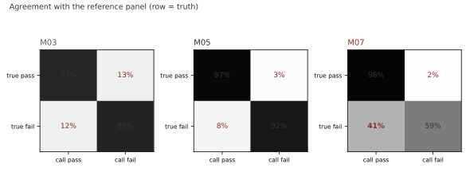
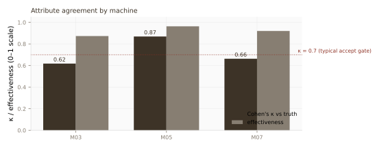
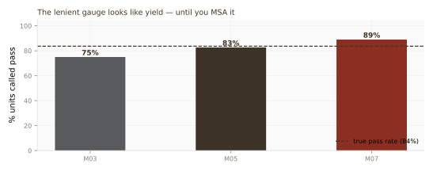

Study 03 ranked loss drivers from inspection counts. That only works if the cameras agree on pass and fail. This is the attribute gauge R&R in front of the Pareto: three AOI machines, one reference panel, Cohen's κ, and the lenient machine that looked like a yield hero.
Simulated attribute MSA in a semiconductor assembly & test (OSAT) environment. Fixed seed; no production images, part numbers, or customer names. Machines M03 and M07 echo the localization story in Study 03.
A classic attribute MSA: 300 units with a known reference state (pass/fail from the committed generator, 16.3% true fail), each inspected once by three AOI machines (M03, M05, M07). Every cell is a pass/fail call. No continuous measurements — this is the inspection layer Study 03 sits on top of.
| Machine | κ vs truth | Effectiveness | Miss rate (escapes) | False alarm rate |
|---|---|---|---|---|
| M05 (reference-class) | 0.87 | 96.3% | 8.2% | 2.8% |
| M07 (lenient) | 0.66 | 92.0% | 40.8% | 1.6% |
| M03 (strict) | 0.62 | 87.3% | 12.2% | 12.7% |


Sort machines by pass rate and M07 wins: it calls the most units pass, looks like the line is running clean, and under-counts the defect population that Study 03 would later rank. That is not yield improvement — it is measurement bias. Strict M03 does the opposite (extra false fails, rework load). Only M05 tracks the reference panel closely enough to feed a Pareto.

• Run attribute MSA before ranking defect categories. Fleiss κ = 0.48 across machines
means the counts are not one homogeneous stream.
• Track miss rate and false alarms, not pass rate alone. M07's escapes are the failure mode
that ships bad parts; M03's false alarms burn rework capacity.
• Pair with the yield study. Recoverable-units Pareto (Study 03) assumes the inspection log
is the truth. This study is the check on that assumption.